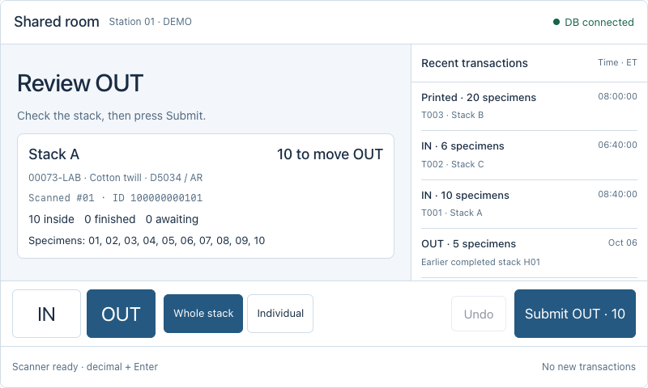
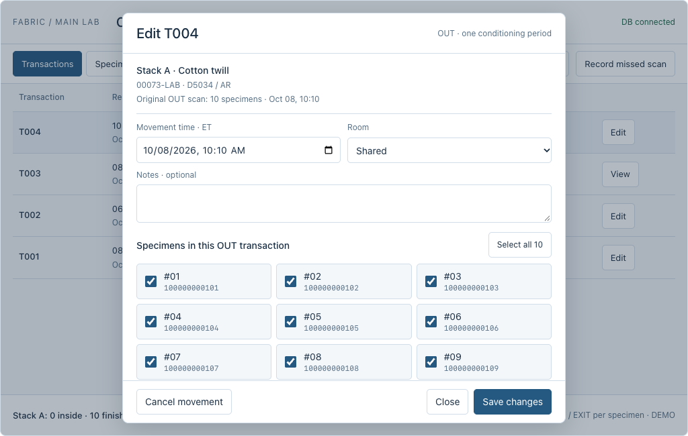
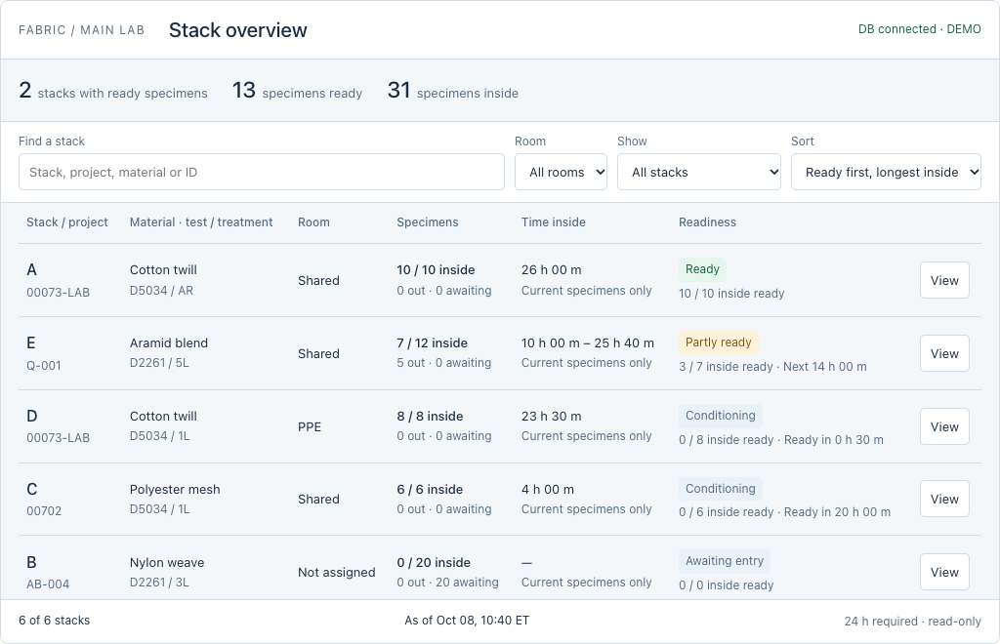

Scan in the room. See what’s ready at your desk.
Three separate screens: the dedicated scanner, the transaction editor, and an overview of every stack. The scanner accepts binary digits + Enter anywhere on the page, with no focused input field.
Scanner

Only the right-hand log scrolls. The whole left readiness area turns green after confirmation. Bottom controls stay visible, including whole-transaction Undo. Individual selection and early checkout use popups.
Try the focused scanner800 × 480 USB-scanner stationTransaction editor

Edit a transaction's specimens, time, room or optional notes; cancel a mistaken movement. Inspect the individual ID records and their single ENTRY/EXIT pair. Modifications, printed times and undo remain in the log.
Try the popup editorScreen and printable Data Matrix labelsStack overview

Find ready stacks first, then compare time inside. Partly ready groups show the exact eligible count. Search, filter by room, or open a stack to inspect each numbered specimen.
Open stack readinessScanner implementation and Pi restart guideOne conditioning period
Awaiting entry → Conditioning → Finished. IN sets ENTRY once. OUT sets EXIT once. Scanning a finished specimen IN does not start another period. Undo or correction fixes the existing record.
Whole-stack OUT acts on members still conditioning. Remove 01–03 from A, then scan any member again: the next whole-stack OUT selects 04–10. Individual mode opens numbered checkboxes.
Binary scan capture
The default input is binary text followed by Enter, matching the tested scanner. No input box is needed on the station screen. Tapping buttons or scrolling the log does not stop page-wide capture. Decimal and hex remain explicit development settings.
36 unique Data Matrix demo labels now encode zero-padded 40-digit binary specimen IDs. The readable ID is decimal. Symbol dimensions follow the encoded payload; the proposed 12 × 12 size is not assumed. Sizing reference
Restart and focus recovery
The dedicated guide includes local UI serving, desktop autologin, supervised Chromium startup, and a local focus/page watchdog. The Pi deployment files are ready for hardware validation; real API wiring and physical cold-start tests remain outstanding. The public Cloudflare tunnel is closed.
Separate frontends, shared API model
These are independent UI simulations with the same mock API shape. They make no HTTP or database requests. The future HTTP API provides specimen lookup with stack members, ENTRY/EXIT fields, transaction summaries, movement submission, correction and whole-transaction undo.
Try Stack A (10 already inside), Stack B (20 awaiting entry, including the maximum 40-bit ID), or Stack C (6 inside for 4 hours). In the desktop example, edit T004 from 10 OUT to specimens 01–03.